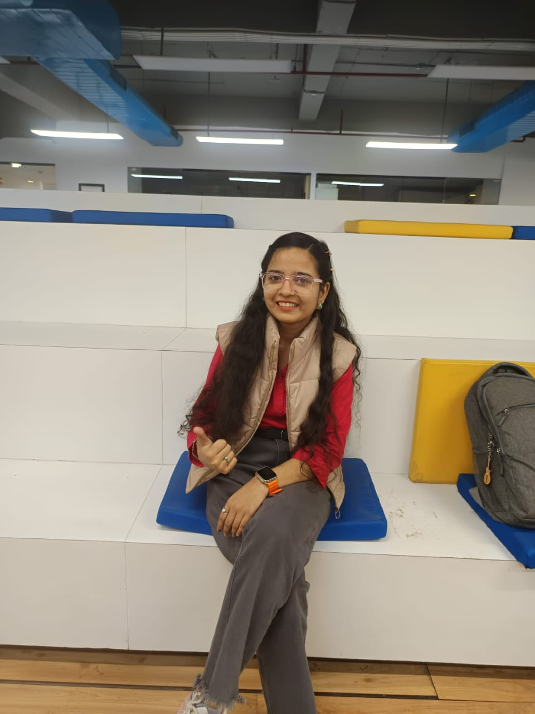

|  | I am a passionate and dedicated individual with a strong interest in web development and programming. I have experience working with various web technologies and frameworks, and I am eager to contribute my skills to a dynamic team. I am a quick learner, adaptable, and always looking for opportunities to grow and improve my abilities. |
Aug 2025 - present
My preferred programming language is JavaScript due to its versatility.
My career goals include becoming a full-stack developer and contributing to innovative web applications.
I stay updated by following tech blogs, attending webinars, and participating in online coding communities.
I approach problem-solving by breaking down complex issues into smaller, manageable parts and researching potential solutions.
One challenging project involved developing a responsive web application under tight deadlines, which required effective time management and teamwork.
I view feedback and criticism as opportunities for growth and improvement, and I actively seek constructive input from peers and mentors.